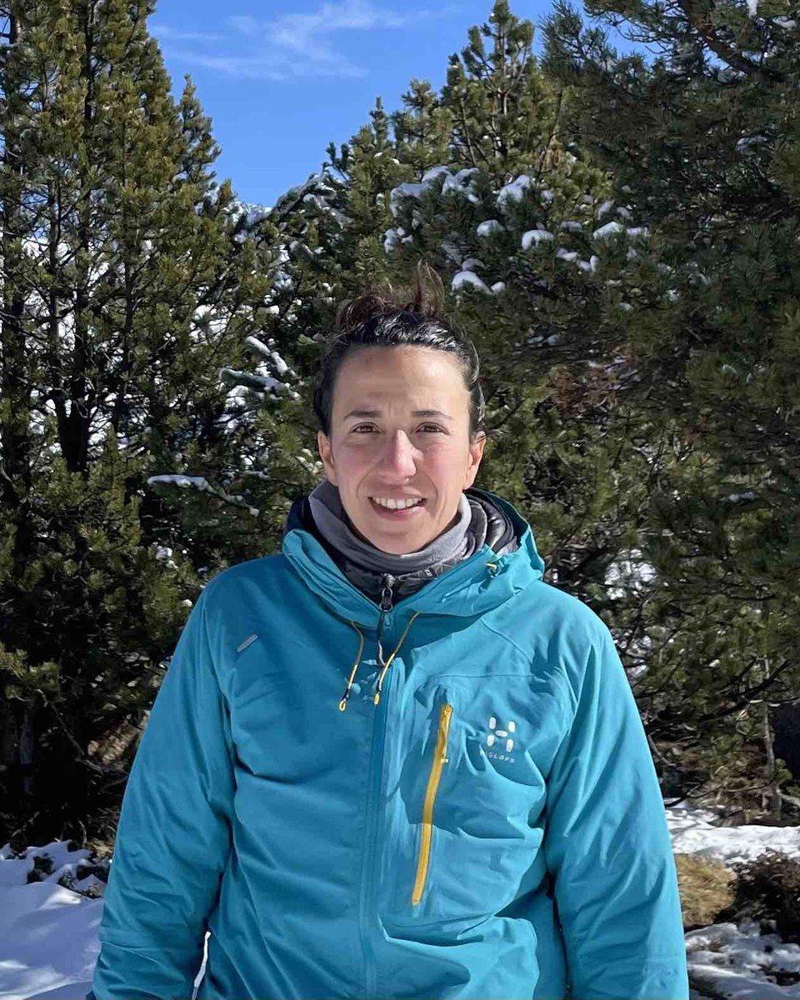
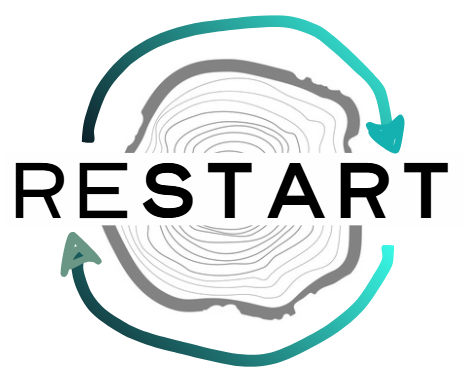

Tree-water relations
Tracing water movement through the soil–plant–atmosphere continuum using δ²H and δ¹⁸O, mixing models and transpiration estimates.
Forest ecology · Dendrochronology
I am a Ramón y Cajal researcher at the University of Barcelona. My work combines tree rings, quantitative wood anatomy and stable isotopes to investigate how forests respond to climate variability and extreme events.

About
My research focuses on the processes that control tree growth and the environmental information preserved in wood. I work across forest ecology, ecophysiology, dendrochronology and isotope geochemistry.
By combining field monitoring, laboratory analyses and modelling, I study how trees acquire and use water, how wood forms through the growing season, and how these processes shape the climatic signals recorded in annual rings.
Department of Evolutionary Biology, Ecology and Environmental Sciences
Faculty of Biology · University of Barcelona
Research
Tracing water movement through the soil–plant–atmosphere continuum using δ²H and δ¹⁸O, mixing models and transpiration estimates.
Resolving the timing and environmental controls of xylem development using microcores, dendrometers and quantitative wood anatomy.
Interpreting carbon, oxygen and hydrogen isotope signals to reconstruct past climate and identify the physiological mechanisms behind them.
Investigating how drought, heat and intense rainfall affect forest growth, resilience and long-term ecosystem functioning.
Projects

Spanish national project
Investigating how source-water dynamics and ecophysiological processes shape spatial and temporal patterns in tree-ring water isotopes.
SNSF Ambizione
Linking cambial activity, wood formation and environmental variability to better understand how trees regulate growth under changing conditions.
European common gardens
Assessing plasticity and adaptation in stable-isotope traits across beech and oak provenance trials spanning contrasting European environments.
Publications
Martínez-Sancho et al. · Forest Ecology and Management
Marbà Vologjanin et al. · Dendrochronologia
Martínez-Sancho et al. · New Phytologist
Teaching & service
I teach Climate-change diagnosis, Dendrochronology and Community and Ecosystem Ecology at the University of Barcelona. I also supervise undergraduate, MSc and PhD researchers.
I also serve as President of the Association for Tree-Ring Research and as Associate Editor for Dendrochronologia.
Contact
I welcome collaborations and conversations related to tree-ring science, forest ecophysiology, stable isotopes and palaeoclimate.
Elisabet Martínez-Sancho
University of Barcelona
eli.martinez[at]ub.edu
Barcelona, Spain